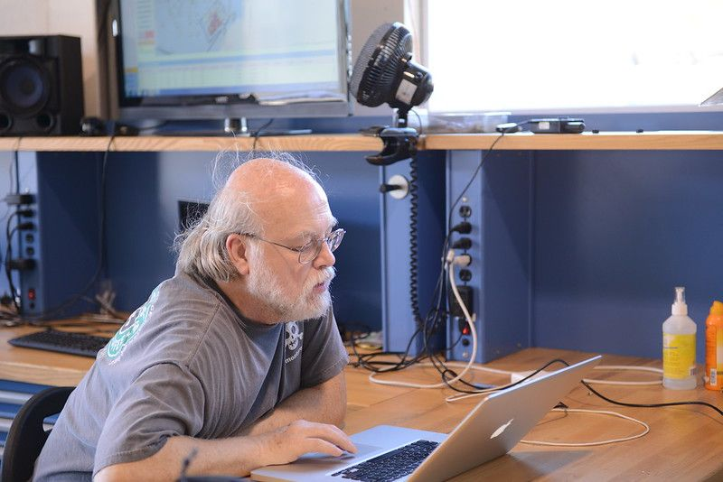

Биография

28.09.2026
Детство
Джеймс Гослинг увлекся технологиями очень рано, проявив талант к инженерии еще в начальной школе. Он вырос в Калгари и уже в 12 лет самостоятельно собирал электронные приборы из деталей от старых телевизоров. В 14 лет он тайком пробрался в компьютерную лабораторию Университета Калгари, где сотрудники вместо наказания разрешили ему учиться программированию. Свою первую оплачиваемую работу в IT он получил в 15 лет, когда стал писать софт для анализа спутниковых данных на кафедре физики. Благодаря такой практике к поступлению в вуз он уже был опытным разработчиком.
Университет
Джеймс Гослинг получил высшее образование в двух знаковых вузах, где закрепил за собой репутацию гениального разработчика. В 1977 году он окончил Университет Калгари со степенью бакалавра наук. Там он много программировал и создавал софт для нужд кампуса, фактически продолжая свою подростковую работу. Затем он переехал в США и поступил в престижный Университет Карнеги — Меллона, где в 1983 году получил степень доктора философии (Ph.D.) в области компьютерных наук. Именно во время учебы в аспирантуре Гослинг совершил свой первый крупный прорыв — написал Gosling Emacs, первую версию популярного текстового редактора Emacs на языке Си. Также для своей диссертации он создал многопроцессорную версию операционной системы Unix, что заложило основу для его будущих масштабных проектов.
Работа
Джеймс Гослинг построил выдающуюся карьеру, пройдя путь от исследователя до главного инженера в крупнейших IT-корпорациях мира. В 1984 году он пришел в Sun Microsystems, где проработал 26 лет. Именно здесь в начале 1990-х годов он возглавил команду разработчиков и создал язык программирования Java, а также виртуальную машину JVM. В 2010 году после поглощения Sun компанией Oracle Гослинг со скандалом уволился из-за разногласий с руководством. В 2011 году он несколько месяцев работал в Google, после чего перешел в стартап Liquid Robotics, где создавал программное обеспечение для автономных океанских роботов-исследователей. В 2017 году Гослинг присоединился к Amazon Web Services (AWS) в престижном статусе заслуженного инженера (Distinguished Engineer), где продолжает заниматься облачными технологиями и архитектурой ПО.